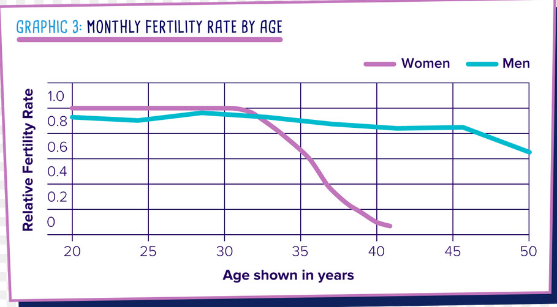

Some thoughts. A bunch of “stuff” flooded my brain this morning, and so I want to spew this stuff on paper and move on with my other projects and activities. So just let me go a spewing. And as I spew forth on this beautiful morning let’s all keep in mind to have a lovely day.
Shall we go a spewing?
Coffee, freshly brewed in the morning, tastes great.
Perhaps we take what we commonly consume for granted. I watched one of those “cop shooting videos” where this guy threatens a police officer to shoot him. He said “go shoot me!”. And the police tell him “lay down your weapon.” And so he lunges out at the officer, and is shot dead. I think he was dead before he hit the ground.
Ugh.
In one year no one will remember his name, what he did for a living, or really care.
And you know what?
That cup of coffee that he had in the morning was his last.
He probably didn’t savor it either. He probably poured himself a cup, gulped it down without a thought and read the “news” about “Presidents says this…”, or “Rich oligarch flies into space because he can. And fuck the rest of youse guys”
Or better yet “Coronavirus is worst ever!”. Or “new strain attacks people left and right!” Or, maybe “new leaked evidence about US funding, and Coronavirus development in China”.
Or perhaps, “Australia alarmed”, or “Japan Alarmed”, or “Refugees pour in from Afghanistan”. Yada. Yada. Yada.
Sheech! Enjoy what you have.
Do you smell the coffee when it is brewing? Do you have the opportunity to drink it in the early morning with some “me” time? Do you eat something along with it?
Like eat a bagel.
Or hang out with your little buddies.
NOW.
Engineering of humans for this “Prison Planet” environment.
As I understand it, the “normal” and default biological life-form is fully capable of simultaneous co-habitation in both the physical world and the non-physical world.Most creatures naturally go back and forth between the two realities quite easily.
Yet humans do not have this ability.
For us (Earth bound) humans, we can only see the physical reality, and have no ability to see the non-physical reality, and what’s worse, not even able to remember it.
The reasoning behind this is described in the work “Alien Interview”.
I suggest that this implies that the human species (for this earth environment) was specifically modified (or retarded) to prevent this ability. And this belief is confirmed in the “Alien Interview”.
If we can determine what the alterations are, we can reverse this aspect of the damage.
I argue that the Type-1 greys are physically modifying the non-physical reality bodies to correct these and other issues, and all that nonsense about abductions are just fears manifested from ignorance. Now, to prevent me from going into stuff that I just cannot state, I will suggest that the “other” humans that sometimes attend these events are not from our “Sentience Nursery Region / Prison Planet”. Instead they are from “outside” of it.
Their bodies are not “retarded” Prison-bodies that we are all so entwined with in this realm that we are in.
The key then is “containerizing” our consciousness outside of the physical body, as it seems to have been devised (or modified) as a physical cage.
Indeed this “Prison Planet” has many, many levels.
Body selection for the truly evil
I think that those souls that developed into truly evil and vile consciousnesses needed to be put into a secure holding facility; a “Prison Planet”. The problem is that as the “Old Empire” got old and corrupt itself, everyone was thrown into this environment. And it is thus and environment that we share together.
Good. Bad. Evil. Disjointed.
Earlier I wrote about CJ, the beauty model that I lived with. She was amazingly beautiful, but inside she was like a horrible demon. At times, when her “real” side came out, I considered her to be an actual evil demon-like entity.
I wonder…
If you were evil and vile and you were in Heaven, and it was time for you to construct your time on earth, what kinds of bodies would you inhabit?
I think that most evil and vile people would inhabit the bodies that would give them…
- Large amounts of Power.
- Unlimited sex with whomever they wanted.
- Control over others, domination.
- Wealth in copious and ridiculous amounts.
Thus, is it any wonder that we see such a concentration of evil and vile people in Washington DC, or in the leadership of smaller African, and South American nations today?
And thus we see an outrageously beautiful person who is a real evil vile person inside.
Alien Interview placed many concepts, now accepted as real, decades before scientific acknowledgement of them.
For instance “continental drift”. “Chariots of the Gods”. The “12th Planet”. “Pole Shifts”. The ability to clone and design creatures with DNA. The list goes on and on.
It is so easy for us to read “Alien Interview” with the eyes of a contemporaneous person from 2021 instead of a person from 1947.
We have to keep that in mind.
In 1947, the “new age” movement did not exist. It did not occur until the late 1960’s. Most Americans believed the Bible was the de facto history of the world. And while Darwinism was taught in the universities, most people focused on the principle subjects of reading, writing and arithmetic.
For the “leadership” of America at that time, it all must have come as a great shock. The idea of “not to follow the tunnel of light”, and that there is no “Heaven” or “Hell”, and that memories are not ever supposed to be erased.
All in all, it was obvious from the reading of the narrative in support of “Alien Interview”, that leading scientists and capable people at that time were pulled in for their thoughts and commentaries. And after much deliberation, I am positive that they HAD to conceive of a secret organization to deal with this species and all of what it talked about.
That is how MAJestic came about. And no, it wasn’t JUST because one singular “flying saucer” was captured. It was EVERYTHING associated with it.
Some cat quotes
I found these humorous.
Does McDonald’s i(outside of China) still have those little white plastic stir-sticks? What about those little metal foil ash-trays? Or those cute kitty-sized little milk creamers?
This is so relatable.
Indeed. They seem to be immune to the earth as a “Prison Planet”.
They come and go from non-physical to physical and back again as if it were nothing.
Poor kitty.
And…
Yeah. I hear ya bud.
And…
Fact. Jack.
Japanese press is hyping up a war with China
American influence no doubt. But it’s all nonsense. A lot of words, and posturing. And it ignores the serious, serious open wounds that fester inside of China.
- It’s Getting More Likely The Japanese Would Fight For Taiwan
- Taiwan vows to defend itself against Beijing, but would …
- Who Would Win a War Between China and Japan? | The …
- The reason why China threatens to “nuke Japan …
- Japan could carry the day in a US-China conflict – Asia Times
- Could Japan Beat China In A War? | The National Interest
- China Will ‘Destroy’ Japan Forces In A Taiwan Conflict …
- These 5 Weapons Would Help Japan Fight Off China | The …
- War fears: China warns Japan will ‘lose badly’ if it …
But let me tell you all, and any Chinese in the MM audience can confirm this statement as true.
"If Japan makes ANY military move against China, China will start nuking that fucking little island like there is no tomorrow. Fuck their military. It will be their cities and people who will all die God Damn it!"
For the last 75 years every single person in China has been exposed to the horrific tragedies and rape of China by the Japanese and the hatred is visceral. I, as an American, am shaken to the core when I see the Chinese react to any of this Japanese nonsense. Believe me. They will fucking bludgeon Japan into a bloody pulp.
Believe me.
Japans had best hide from China, and not do anything that the USA wants. Mind My Words. Video…
Things have changed.
This was then. Now look at today. If you want to fuck with China you had best get ready for a real bludgeoning. Video.
Greek Breakfast foods
Every now and then I come across a Greek restaurant. I love the food there. And I think that it would be great to try some of their breakfast foods.
Feta, Veggies and Eggs
Whether they’re scrambled or served omelette style, you can’t go wrong with topping eggs with Feta. Try adding chopped onion, a bit of garlic, veggies of choice (zucchini, bell peppers and tomatoes are great in this dish). Sprinkle in some coarse salt and freshly ground pepper. Toss in a splash of milk, and whip together in a bowl. Cook the eggs either omelet or scrambled style, adding the Feta, when the eggs are almost finished. Delicious Greek breakfast food!
Eliopsomo: Greek Olive Bread
You can pick up this wonderful, traditional bread at a Greek bakery or cafe, as well as many specialty grocery stores. While it’s delicious simply toasted and served with your morning cup of coffee, try switching it up a bit by topping the bread with a good Greek cheese.
Spanakopita
Who doesn’t love Spanakopita? But, remember, it’s not just for lunch and dinner. Why not warm a slice and serve it on a plate with your morning cup of coffee? It’s a great alternative to the everyday breakfasts you’re likely tired of eating.
PLA expels U.S. destroyer from China’s territorial waters off Nansha Islands
Not reported in the American “news” media.
The Chinese People's Liberation Army (PLA) said Wednesday it had expelled a U.S. guided-missile destroyer that trespassed in China's territorial waters near the Nansha Islands in the South China Sea. PLA Southern Theater Command spokesperson Tian Junli said in a statement that the U.S. military's act had seriously undermined China's sovereignty and security interests. Calling Washington "a risk maker" to the security of the South China Sea and the "biggest destroyer" of the region's safety and stability, Tian warned that the theater command will "remain on high alert." "We will resolutely safeguard national sovereignty and security, as well as peace and stability in the region," he said.
I expect more belligerent actions by the US Navy in the coming months. And expect China to tire of the “cat and mouse games” after a while.
Snow Leopard: The National Animal of Afghanistan
With all the new a talking about Afghanistan, no one is talking about this little tidbit of treasure. The national animal of Afghanistan is Snow Leopard.
The Snow Leopard is a big cat who lives on a high altitude and preys on Argali wild sheeps, Ibex, Pikas and rabbits etc.
Snow Leopard are very rare and are only found in 12 countries like China, Nepal, Pakistan, India, Russia, Afghanistan etc. Snow Leopards are so rare that they estimate that there are only 3500 of these creatures left.
China has the 60% of the population of these majestic cats.
These white big patched cats love to live between an altitude of 10,000 meters – 18,000 meters. The gestation period is 3 and half months. An astonishing there here is that their limbs are extremely powerful, even they can hop up to 30 feet which is 6 times their body length, extremely strong limbs huh?.
Another specialty of these Snow Leopards is that it have a gray or light green eyes rather than a yellow or gold like the other big cats. The Snow Leopard was thought to be extinct in Afghanistan, however, 100 are still out there somewhere.
There is no specified reason why Snow Leopard is opted as the national animal, but some says as the people Afghanistan are well known for their brave character and this majestic cat, however, reflects the very same ideology. And you know, the Afghanistan people are not as the USA media pictures them. They are something else entirely. I think the Snow Leopard fits their psyche.
Changes in the geography of the basic world-line template that many people use
Changes are happening, and the templates are changing. No, not the anchoring effects, but the general master templates themselves. To do this is very, very, VERY powerful.
I was once asked how powerful the extraterrestrial benefactors were. They asked if they had weapons powerful enough to destroy cities. I responded that they had the ability to move the earth from it’s orbit. Put it inside the Sun for five minutes. Let it bake good and well, and then place it back in orbit. That is how powerful they are.
I see that there are some events that are changing. Future life-track world-lines seem to be adjusting to new templates, and these templates are … peculiar.
Peculiar.
You heard it here first.
Bob Odenkirk back on ‘Better Call Saul’ set after heart attack
I enjoy “Better call Saul”. It’s a great show. But you all gotta follow it for a while to figure out what is going on. I think it’s great. But them I was surprised to discover the actor who plays Saul Goodman had a heart attack. It bummed me out.
58 years old. Had a heart attack and blockage. Major bummer. I am glad that he’s back on his feet again. You all must take care with your body. As you get older heart attacks become real threats.
I’ve had two of the fuckers.
The first time was in a high-stress work environment, while dealing with a high-stress mentally ill wife. I was in the machine shop and had a serious heart attack. Good thing that I was young. 36 years old or so. I was able to pick my self up from the floor and get to the doctor. The second time was last year when I was adjusting to new blood pressure medicine.
Eat well. Watch your health. You never know.
What is “freedom”?
I know, I know, I know. I have gone on and on endlessly about this subject. But “freedom” is NOT the ability to vote in a democracy™. It’s something else. It’s entirely something else.
Some things that need to be underlined…
- Freedom to be left alone.
- Freedom to disappear.
- Freedom of complete privacy.
Any nation that does not allow these freedoms is just a prison.
Facebook pays contractors to read your ‘encrypted’ WhatsApp messages, shares info with prosecutors – reports — RT World News
Obviously this is an ideal, but I do have to tell you’se guys that if your nation isn’t allowing it’s citizenry these freedoms then it is not DOING ITS JOB. Nations have a duty to their citizenry.
All nations in the world today violate these aspects of life to one degree or the other. I argue that this also includes China…
…but, China is far better protecting the massive onslaught against the individual by aggressive interests than the United States is. The freedom to be left alone is a major issue, don’t you think?
Some thoughts on democratic voting balancing
I have long given up on the belief that a democracy is the best way (or even a way) of running a nation. But others haven’t. Here’s some thoughts by RM on how the American democracy could be improved to better serve it’s people.
Just some kids playing
In America they banned toy guns “for the children”. In China, all kids get to play with toy guns, and they all receive real military training on how to use them in the Pioneers and Scouts. Not to mention the mandatory Middle School mandatory boot camp. Video.
FOX “news” praises China!
Are pigs flying in the skies above the United States these days? Did Hell freeze over?
The famous China-hater Carlson says China does a few things right:
- Houses are for people to live in, not for speculation;
- Children are to limit their gaming time to three hours in the weekend;
- Celebrities are not to be worshiped; he should add: young men are not to wear make-up to look like women.
Short Video here…
The YouTube version can be found here:
The differences in the relative importance of sex to women as opposed to men
Men and women are different.
Men have testosterone flowing through their veins and women have progesterone flowing through their veins. Both hormones greatly affect our social interactions with others, as well as our drive to succeed, make friends, form businesses, and establish long-lasting relationships.
Both levels fluctuate over the life-time. And thus both males and females experience different phases of life.
Testosterone levels for men and women during a life-span.
For Women… the progesterone levels fluctuate on a cycle. This reflects the ability to have children. As the levels fluctuate, moods, emotions, and physical appearances all change. I am sure that all MM readers realize this.
Now, you notice that after a period of time, this cycling stops. And thus we have this graph…

And my point is this…
Both women and men change biologically through their lives. For women, they tend to cycle faster on a more or less monthly basis, while men are fairly constant. Then at around 35 years old everything changes.
And the reason why I bring this up is that physical cosmetic changes in transgender surgery might help a person’s ego and self-esteem, but it will not change their biology. No matter what amount of dosages of hormones that they take.
When a 50 year old man goes into transgender surgery to become a woman, the only changes will be external appearance, and perhaps personal ego. It will not change their internal biology. For the rest of their lives they will be tethered to external hormonal treatments just to maintain their state of mind. The moment that you decide to go transgender, you become addicted to big-pharma, and at the mercy of what ever they demand of you.
If you stop, intentionally or unintentionally (such as a societal collapse, war, or inaccessibly of hormonal treatments) your biological regression could become a living Hell for you.
Do you think that I am being mean or cruel to point this out?
If people want to do something, I say do it! But, please do so with balance. If you are proud to be a transgender person, then tell your story. Firstly for those who need hope, but also for those that don’t understand. However, don’t paint a 100% rosy picture either.
Life is about tradeoffs. You all need to discuss those tradeoffs realistically and openly.
If you are in your late 40’s and wish to be a transgender woman then you must realize that the lifestyle that you are moving towards will have consequences.
Some Chinese food
I eat a lot of food in China that you simply cannot get anywhere else. All those “Chinese” restaurants only sell pre-packaged “Chinese fast food” that has been Americanized, or Westernized to some extent. Here’s some short videos. Please check them out…
XianXi Potato, Beef and noodle soup.
So very good. When you cook the hot peppers they mellow out and are not so spicy. Yum!
XianXi Eggplant with string beans.
Always a delicious pleasure.
XianXi breaded chicken tenders.
This is the “real deal”. Not the pale processed meat patty things that you get in fast food restaurants.
The ONE problem that I have with these delicious foods is the glossiness. All that gloss and shine is caused by heavy quantities of MSG. Ugh!
Facing a Harsh Future With the Wisdom of the Past
Ah. It’s a very American-centrist article. Very myopic. However the conclusion is critical. Americans MUST take a good hard look at what America is TODAY, and work on a NEW WAY to govern, deal with a great diverse citizenry, and function properly.
But before we get to the article, lets note what was said about the former Soviet Union. One observer described this as follows.
As the state and economy collapsed, their money worthless, their jobs evaporating, with crime, disorder, and corruption rampant, life expectancy plummeted in post-Soviet Russia. The longstanding Russian curse, alcoholism, became an endemic phenomenon in Russian life. Abortions substantially exceeded births, suicides soared, and the state apparatus and law enforcement collapsed along with the unkept utopian promises of a failed system.
Well…
Can’t you describe the United States this way today?
As the state and economy collapsed, their money worthless, their jobs evaporating, with crime, disorder, and corruption rampant, life expectancy plummeted in the United States. Alcoholism, and drug abuse (both legal and illegal) became an endemic phenomenon in American life. Abortions substantially exceeded births, suicides soared, and the state apparatus and law enforcement collapsed along with the unkept utopian promises of a failed system.
.
by Jonathan Sawyer on September 8, 2021
By tradition Americans are an optimistic people. As the saying goes, we are imbued with an “indomitable spirit” in times of hardship at home and major crises abroad. These qualities contribute to our sense of national unity. We view ourselves as a country defined by, but not imprisoned in, the past. We eagerly await future opportunities that will make our lives better and more fulfilled. We don’t fear what is to come — we welcome challenges of all sorts.
Throughout our history, we have bonded together when necessary to overcome barriers to our development as a nation. We have tamed an entire continent and fought wars abroad in support of freedom. We have survived economic failures, massive political unrest, and other threats to our sovereignty.
However, in light of recent events and civil disruptions, the cohesiveness of times past — “our indomitable spirit” — is no longer as firmly embedded in our national consciousness as before. Other countries are challenging our scientific dominance in many areas.
Our role as a leading world power is being questioned if not discredited.
China and Russia are expanding their influence throughout the globe with impunity. Obsessed with domestic unrest, the COVID pandemic, and immigration, we have not yet fashioned a coherent policy to deal with their aggressive strategies.
In spite of this shift in priorities, we tend to fall back on old ways of viewing our national goals and international commitments. Rapidly shifting conditions have created the need for a reevaluation of our relationship with allies and adversaries.
Once again, we have reverted to what I call the basic fallacies in the way we negotiate issues of national and international importance. Our optimism and pioneer spirit, as mentioned above, have a decided effect on the following observations:
The first fallacy is minimizing the impact of radical change: believing that successful measures should stay the same.
Our nation was founded on the principles set forth in the Declaration of Independence and the Constitution. Many political scientists and judges are classified as “constructionists”: they believe that these two documents are “sacred” in nature and cannot be changed as written; others, on the other hand, are “organic life” specialists who conceive of these same documents as broad-stroked guides to political governance.
As a result, they should be interpreted according to the exigencies or dynamics of the times. Conservatives, in this debate, wish to preserve the integrity of past legislation and its precedents; liberals seek a flexible, malleable Constitution that can be interpreted as conditions warrant.
Conservative and liberal scholars both admit that adjusting to societal needs is the purpose of Constitutional amendments (27 overall to date); however, from a conservative perspective, why should legislators modify its basic framework at the same time?
We cannot project current trends with any accuracy into the future. For more than 234 years our republic has been well served by the wisdom of the founding fathers.
Resistance to change is normal but the refusal to change or alter our strategies can be very costly in the political arena. In general, cautious flexibility in judgment should always prevail to avoid the fallacy of expecting similar results over time.
The second fallacy is that good-hearted people, guided by compassion, will always determine political outcomes.
Laws, as well as wars, are rarely decided by well-intentioned government agencies. War is ended through defeat or surrender, in most instances without conditions.
Compassion has nothing to do with how the enemy is treated during the occupation of their land. Expediency and collaboration serve as principles of conduct for most Western powers. Countries in the Far East have long ruled their conquests by sheer force, terror, and indoctrination.
Western laws are legislated with mutual interests in mind, not compassion.
They are the end product of hard-nosed compromises in republican governments. Under dictatorial rule, laws are enacted by representatives who are subject only to the will of a tyrant. As Louis XIV of France famously said” “L”Etat c’est moi!” (“I am the State”)
The third fallacy is that democratic or republican government will always be preferred to autocracies that suppress individualism and freedom.
The United States has tried repeatedly to impose democratic rule on countries they have conquered. Without a foreign military presence and forcible adoption of republican-like governments, these nations would most likely have reverted to an autocratic form of leadership that meets the needs and expectations of native or tribal leaders (e.g. Afghanistan and Iraq). Autocracy–if administered with a full understanding of the people and culture–can be very effective: to wit, the despotism of Saddam Hussein in Iraq that held warring tribes together (the Sunni vs. Shia).
Countries in the Middle East have been governed by monarchies, emirates, and dictatorships for many years. Democracy and its emphasis on individual rights are for the most part incompatible with these cultures.
Lacking the oversight of American military forces, Afghanistan will quickly return to tribal governance; extremists (i.e., the Taliban) will enforce Islamic laws that are detrimental to women and young girls. More than twenty years of warfare have forced us to admit that the Islamic world has hierarchical gender customs that are unacceptable to Western sensibilities.
The fourth fallacy is that, in times of crisis, America will always protect the rights of the individual as dictated by law.
LOL. Ha ha ha ha ha ha.
This fallacy is a product of Western thinking and political expectations. In the Far East, with the exception of South Korea and Japan (“conquered” nations with an active American military presence decades after the end of hostilities), in times of crisis the individual will always be sacrificed to the welfare of the group or nation.
In the United States, there would be a hue and cry of protest if individual rights were not protected, even during the worst of times.
Dictatorial or autocratic governments see little benefit in making an entire nation suffer to improve the life of an individual or a small group of citizens. This attitude reflects the culture’s view on human life and its relative value to society as a whole.
The fallacy of assuming that all cultures will accept our interpretation of human rights is the basis for multiple conflicts abroad, especially in the Middle East and China.
The subcontinent of India, with its rapidly increasing population, seems to be the exception to autocratic or monarchical Far Eastern regimes. Its republican government comes from the Raj or British colonial rule. Within a relatively short period of time, demographers project that India’s population will surpass that of China, thus making it the most populous country in the world. With multiple ethnic groups, religions, and languages, one wonders just how long India’s national unity will endure under the stress of these social and sectarian divisions.
In spite of many attempts to do so, we cannot impose our political style of governance on conquered nations (“nation-building”).
The American concept of local or state sovereignty, allied with the federal government on issues of national importance, is unknown in many nations around the globe.
Our system of government is successful because most citizens accept its efficacy.
Once that cooperative spirit and support are disparaged, our belief in the necessity of collective action will eventually disappear. If this should occur, our democracy, in its current form, could not survive.
Given the widespread diversity that now characterizes the American population, how can we preserve the willingness to accept electoral results? When voting procedures are litigated and broadly challenged, the seeds of discord are planted.
The outcomes of future elections will be viewed with suspicion.
Voter acceptance will be weakened and outcomes subjected to excessive scrutiny. We are quickly moving toward a more tribalistic form of governance as identity politics and interest groups take priority over concerns of national stability. The progressive movement to rewrite history in favor of “disadvantaged” minorities will undermine our sense of national unity. The wokeism of modern politics will have disastrous consequences in the years to come.
Our recent celebration of the Fourth of July (2021) with fireworks and the traditional appeals to unity rang a little hollow.
Many liberal extremists now view the American flag as a symbol of white domination, not national unity. Radicalized athletes “take a knee” in protest against racial injustices of the past. In a few decades, if this anti-American trend continues in our schools and social media, what will the cohesive theme of the Independence Day celebrations be? Will we continue to show the same enthusiasm about our country and its uniqueness?
This divisive mood was evident in the singing of the “Black national anthem” together with the “The Star Spangled Banner.”
If Blacks can impose their will on authorities at this event that celebrates national unity, we should expect Hispanic or Vietnamese music at next year’s festivities to emphasize their growing national influence. An hour-long special on the evils and repercussions of slavery would also be appropriate. This would encourage Whites to reflect on their “privilege” and need for atonement, not on the common traits that join our diverse ethnic groups into a functioning whole.
Do not expect, however, an in-depth documentary on the “root causes” of Black-on-Black crime in the bloodbath of Chicago’s ghettos. Blacks who shoot other Blacks are considered collateral damage (if not commonplace) and not worthy of media attention since they do not conform to the “progressive narrative.” Blacks are important only if they are perceived as victims of white neglect or violence. More than anything, a White police officer who shoots an “unarmed” Black merits national media coverage of a prolonged nature.
A statue of George Floyd (“I can’t breathe”) — a five-time convicted felon, counterfeiter, drug dealer and addict — is emblematic of this racial disparity. In a sense, his monument places a minor-league Black criminal on an equal footing with the statue of Martin Luther King, Jr., in Washington D. C. which is a focal point for racial justice and peaceful compromise.
In summary, we tend to reason in ways that reflect our personal experiences and biases . The fallacies we have discussed pertain to national habits and attitudes which offer reassurance that most problems, no matter how difficult, can be solved by good-will diplomacy and relentless hard work. In a word, it is the “American way.”
In another context, this fallacious approach to domestic issues will have a negative impact on our national security and future solidarity. The questions that we should address in discussing our current political crises are many. The following are only a few examples among the most critical:
The Left’s recent promotion of “systemic White racism” as an intrinsic quality of being White; race is deemed a form of social destiny if not a “disease” that must be eradicated. The celebration of Project 1619, now being taught in many schools and Juneteenth (the arrival in America of the first shipment of slaves and its adoption as a national holiday); the introduction of “critical race theory” into the classroom (our country was founded on slavery and the continuous oppression of Blacks up to the present day; history must reflect this reality as an innate and permanent evil of white leadership.); social progressivism and its narrative: the Marxist ambition to remake America into a socialist state. To wit, laws enacted by white legislators have no relevance in the wokist community and are consequently illegitimate in their eyes. Rioting in the name of woke political causes is effective and morally justified, no matter what the results may be. As the Bolshevik leader Vladimir Lenin once stated, to make an omelet you must first break some eggs. Unrestricted immigration is not so much a demographic issue for Americans but a means of achieving the long-term dominance of the Democratic Party.
We must also remember that to remain silent in the face of this dystopian turmoil is a sign of assent. The Biden-Harris regime is using the full power of the federal government to enforce its agenda. The COVID pandemic and its variants will be the stalking horse for the implementation of draconian measures related to gun control, “white supremacists” and their insurrection, climate issues, and the radical socialization of American politics. President Biden is now touting “human infrastructure” in his efforts to promote child care and parental subsidies that have nothing to do with the rebuilding of bridges and roadways. COVID vaccinations will become mandatory in spite of legitimate objections to their application on a national scale. Ideology is promoting vast changes in the way we relate to others.
The America First of the Trump era is becoming a radicalized new country in its political aspirations toward equity and inclusion of minorities in all facets of government, regardless of true merit.
If we remain as we are now — diverse, quasi-socialist, egalitarian, and democratic — we have no reason to expect that this trajectory will change.
That means, that for the first time, we must reconsider our assumptions about what America is, and look instead to what it must be in order to survive our bad decisions as a democracy up to the present date.
And one of the reasons why you won’t find anything positive about China in the USA media or literary sections…
Sad, but true. I guess that a 98% satisfaction rate with their Chinese government isn’t good enough.
And in the WTF department…
Can someone please explain…
China’s August exports defy reality and surprise many
150 million people = 33 times the size of New York City
The situation in the USA is madness
Well it is. You simply cannot deny it. Video HERE.
What is the true situation in Russia today?
From “Amorphous Anonymous” .
We talk a lot about the Soviet Union, but how does this relate to modern Russia? I don’t know the answer, consider this as a question. (Socialism I suppose?)
A) The transformation of the city of Ivanovo and seven others.
Video blogger, Студия Позитивчик, named “Studio Positive”, has made 8 before/after videos comparing the last 9 years of development within 8 Russian cities. The video links are on his home page:
https://www.youtube.com/channel/UCqQfIypDWVn2-IjkFWJojBQ
- Naberezhnye Chelny, 400 km east Moscow
- Ivanovo, 254 km NE Moscow
- Sochi, NE coast of Black Sea
- Gelendzhik, NE coast Black Sea 150 km up from Sochi
- Veliky Novgorad, 125 km south of St Petersburg on road to Moscow (about 450 km from Moscow)
- Ryazan, 200 km SE Moscow
- Saratov, On the Volga, about 850 km SE Moscow
- Tyumen, East of Ural mountains, about 8-900 km east Moscow
- Naberezhnye Chelny, in Tatarstan, about 600 km east of Moscow
What do you see when you scan through these video records? Well, you see modern Russian architecture, which is very interesting just for that. Eight cities are developing, growing, being renewed. I ask “How is this being done”? You can identify several different kinds of projects.
- Renewed streets and landscaped parks and waterfronts. This is all local government financed obviously.
- Commercial activity, strip malls, restaurants, shopping malls. I am thinking this is all private investment, it must be capitalism, for the wide variety of it.
- Some large residential complexes? I don’t know, is there social ownership in living spaces? Or is it capitalism again?
- Many old residential complexes (ragged looking in the 2011 before photos), are renewed with white walls and brightly colored balconies and the accent of architectural touches. Would a private owner put money into building aesthetics? Would they get any more rent out of it? Has it changed hands and the new owner is upgrading? Maybe it is old communal residences with community financing doing the work?
- Also there are some stadiums and other large structures. What is the ownership status of these complexes and who are the investors?
These are questions that I don’t have the answers to. Who are the city planners, and how much do they have a say about city development?
B) An understanding of Russia’s Future
We try to get a better understanding of Russia’s future by going to some websites that are purported to have expertise on Russia, and run by Russian speakers. These are like the Saker, Dmitry Orlov, Andrei Martyanov, Charles Bausman, John Helmer, Vsevolod Pulya, Patrick Armstrong, Alexander Mercouris, Marko Marjanović, I think that there are others that I have left out.
What do they say?
Lots are concerned with geo-politics and military science. Then we are led to believe that
"Putin’s successes are anchored in a powerful energy sector, along with a vigorous science-technical and arms sector, which are also under direct state control".
Russia must be doing pretty good, right? Or are we getting a correct picture from these new “Hypersonic missiles”, gas pipelines, super weapons, and atomic Ice-breakers?
Plus now lately, we are told that Russia will build 5 new cities from scratch in Siberia, and the order is signed and the money is available. (Let them start with one.)
Will this happen? Is this a full and correct picture of modern day Russia? The 8 videos above show developmental progress in some important cities. If this is the general picture it should show up in all phases of Russian technical, scientific, educational, and commercial activity.
But lets’ try to take an honest look with a 2017 survey of Russia’s achievements.
B.1) Russia is number 12.
In a listing of published scientific articles by country, Russia is number 12, with only 10% by numbers, of the articles published in the USA. I won’t discuss the quality of the articles, which some do. the 2021 figures are here:
https://www.scimagojr.com/countryrank.php
You can also divide the papers up by what Russia is good at, like mathematics and astronomy, but still the standing is very poor.
B.2) Russian foreign studies
Russia has a very poor standing in studies of foreign countries. For example China has at least an order of magnitude more people studying about Russia than Russia has studying in the universities about China. That being said, it is the global norm. The amount of American studies of other nations is practically zero.
Russian salaries in 2012,
- $500/month for a Research Fellow,
- $900/month for a senior researcher at the Institute of the Far East RAS.
- $1,000/month for an Assistant Professor,
- $1,500/month for a full Professor at Moscow State University’s (MSU) Institute of Asian and African Country Studies. (2012)
The $ exchange rate has more than doubled since then, so do scholars survive on those same old ruble rates, or have they gotten a raise? (Admittedly their expenses are in rubles, not in dollars.) But if it was too low they may leave the country.
B.3) Salaries for R&D
Salaries for R&D are some of the lowest in the top 50 countries. I could put up a chart, but Russia is at the bottom.
B.4) Technical equipment is gutted and sold off
R&D equipment is missing, in 2017 Russia had 3 supercomputers, China had 202, US 143. Russia is 18th in the list.
B.5) DNA
It is hard to come up with the number of Russian “high throughput DNA sequencers” for biotechnology research. But I think it is minuscule compared to the rest of the world. Some (older) sources said only 8, but let’s give it 25. 2013-14. Back then there were 250 in China and over 900 in the USA. Europe is loaded too.
B.6) Patent Applications
Russia is 6th in patent application in 2017, 30,000 compared to 1 million in China, 300,000 in US and 250,000 in Japan.
B.7) Venture Capital
In 2016 Venture Capital funding in Russia was 300,000 Euros, about the level of (less than) Ireland, or Finland, and more than in Italy. All of Europe $14 billion, US $72 billion, China $49 billion, India $8 billion. Russia is 6% of China, Russia 4% of US.
B.8) Artificial Intelligence
Artificial Intelligence startups in 2017, Europe 409, US more than 1000, Russia only 12. Equal to Sweden, Finland or Switzerland each with 10% of Russia’s population.
B.9) Industrial Robots
Russia had an operational stock of around 1,771 multipurpose industrial robots as of 2012. America 200,000, China 100,000, Japan 300,000, ROC Korea 138,000, Germany 162,000. Poland 4,500.
The absurdly low levels of robotization in industry raise serious questions about Russia’s political economy and its economic future. Low wages preclude automation, and low automation preclude greater productivity and higher wages?
B.10) Tooling and machining
2014-2015 Russia is 17th in machine tool companies, 485 companies producing machine tools in Russia (Canada just ahead, Thailand just behind).
- China 22,000 companies,
- Japan 13,000,
- German 12,000.
- Italy 5000,
- Korea ROC 4,600,
- USA 4,500.
The problems holding Russia back are severe, and possibly intractable. There are strong financial and ultimately institutional barriers to unlocking Russia’s scientific potential.
(Russia does consume around 2.7% of the world’s machine tools – it is, after all, the world’s eighth (or so) manufacturing power.)
A solid start would be to look at these statistics and acknowledge that a very big problem exists, which if unresolved, will continue to degrade Russia’s economic, industrial, and eventually military competitiveness. Where is the money and where is the resolve to tackle these problems? That is what I am asking, to anybody that might know.
Who are the true friends of Russia? Those that sound this alarm, or he who says “don’t say things that our western sworn enemies are always saying”? To me the answer is obvious.
Of course I have sources for all of this data. It comes from Karlin on Unz. He’s got all the charts and 5000 words of commentary. 2017. You can check them yourself. https://www.unz.com/akarlin/russias-technological-backwardness/ If there is a newer study, of course I would love to see it.
You don’t hear much about Russia these days, and thus Americans and most of Europe are kept intentionally ignorant about both China and Russia. As I see it, the rest of the world is growing and sorting itself out the tangled monstrosity that the United States has become. And unless the USA starts taking time to improve its piss-poor domestic state, it will be doomed to become a modern day Portugal.
Media Trust
Trust in U.S. media is at a record low:
The United States ranks last in media trust — at 29% — among 92,000 news consumers surveyed in 46 countries, a report released Wednesday found. That’s worse than Poland, worse than the Philippines, worse than Peru. (Finland leads at 65%.)
One reason is that U.S. media are either not reporting important events, are misreporting them, or are very late in covering twisted plots that even a lowly blogger can get right just as they happen.
It’s 4:30 PM in China. A very mellow time.
It is a mellow time. It’s peaceful and calm. China (outside of the big cities) has a much slower pace of life, and lifestyle than what the hyper West has. And it is refreshing as “get out”. Check out the video below.
Note that even though China is very safe and isolates any virus outbreaks immediately, everyone still wears masks, and is a heightened level of security and safety.
Also note that all my life, walking and enjoying life at 4:30p, was denied to me. I was usually at my desk or in a meeting in a sterile workplace technical corporate environment. Being outside that bullshit is refreshing to me. Video.
Actually this is a big issue, and I need to devote a few articles to this subject. Do you all “get” what I am trying to say in this matter?
A great article from UNZ…
A Military Solution to a Commercial Problem
I’ve seen this look before
This expression is one that I have seen time and time again. A foreigner visits China for the very first time, and he /she has been her for maybe a week… and this is the expression that they get on their faces. It’s precious.
Watch the short video here.
Conclusion
This is the start of a series of short thoughts and articles that I just want to clump into a new category of article. What do you guys think? Do you think it’s fine, or would you like me to continue to write long in-depth articles on singular topics? Any preferences?